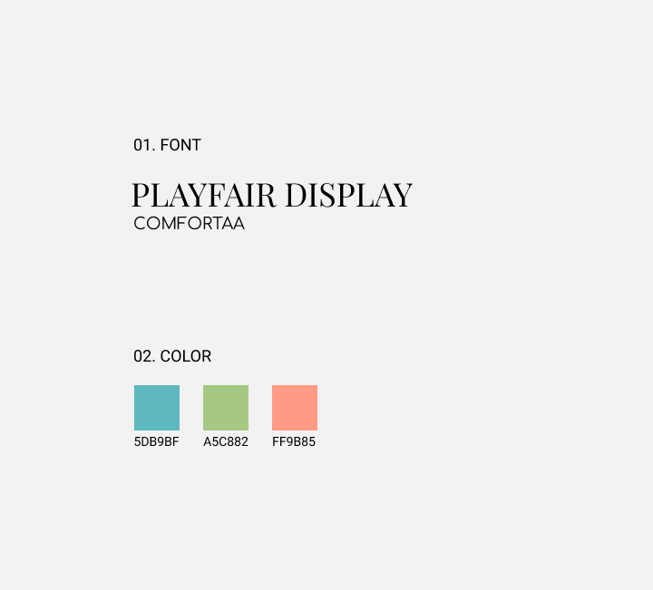

E-Recycling
Project creating slides to teach users how to recycle electronics.
TABLE OF CONTENTS
DESIGN ROLES
- Instructional Designer
- Visual Designer
DELIVERABLES
- Outline
- Storyboard
- Slides
TOOLS
- Figma
01. OVERVIEW
Parameters: Create an outline, storyboard and four slides on the topic of recycling. Produce quality milestones: outline, storyboard, finished slides. Learning objectives laddering up to the content in the storyboard. Looking for styling and layout, attention to detail, etc.
Course Title: Recycling Your Computer
Goal: Giving audience a basic understanding about the steps they need to take in order to recycle their computer.
Audience: People who familiar with recycling as a general concept (for paper, plastic, glass, etc), but are not as familiar with e-recycling.
02. COURSE MAP OUTLINE
I created a style guide for the project here:
I also wrote a course outline, which is in the following link:
03. STORYBOARD
I created a storyboard mapping out the trajectory of the four slides. In slide 3, there are four hyperlinks that provide more information for the users.
04. SLIDES
As a personal project, I recreated the powerpoint with Adobe Captivate. I wanted to make the class interactive, and accessible in all devices, so I made sure that it would be responsive: